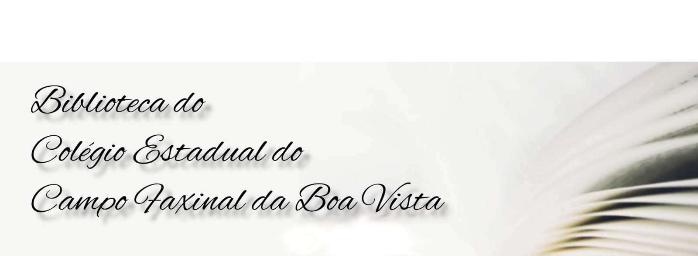

<!DOCTYPE html>
<html lang= "pt-br"></html>
<html>
	<head>
		<meta charset="UTF-8">
		<meta name="viewport" content="width=device-width">
		<title>Biblioteca</title> 
		<link rel="stylesheet" href="reset.css">
		<link rel="stylesheet" type="text/css" href="style.css">
        <link href="https://fonts.googleapis.com/css?family=Montserrat&display=swap" rel="stylesheet">
        <link rel="stylesheet" href="https://fonts.googleapis.com/css2?family=Material+Symbols+Outlined:opsz,wght,FILL,GRAD@20..48,100..700,0..1,-50..200" />
	</head>
    <body>
        <header>
            <h1></h1>
            <div class="caixa">
                    <nav id="Menu">
                        <ul>
                            <li><a href="index.html">Inicio</a></li>
                            <li><a href="livros.html">livros</a></li>
                            <li><a href="sinopse.html">Sinopse</a></li>
                        </ul>
                    </nav>
                </div>
            
        </header>
            <div class="caixa">
                <h4 >Livros</h4>
                
                <p class="paragrafo-livro1">Aqui você vai encontrar a maioria dos livros da biblioteca do Colégio Estadual do Campo
                Faxinal da Boa Vista.</p>
                <p class="paragrafo-livro2">Se estiver procurando algum livro basta digitar o nome do livro AQUI </p>
            </div>
        <section >
           
            <!-- input tag -->
            <input id="searchbar" onkeyup="search_livro()" type="text"
            name="search" placeholder="Nome do livro" class="pesquisa-de-livros">
            <span class="material-symbols-outlined">menu_book</span>
            <!-- ordered list -->
            <ol id='list'>
                <li class="livroN" id="cor-da-letra" >A</li>
                <li class="livroN">A Bagaceira </li>
                <li class="livroN">Abraão e as Frutas</li>
                <li class="livroN">A Cartinha Cor-de-rosa </li>
                <li class="livroN">A Droga do Amor</li>
                <li class="livroN">A Educação pela Pedra e depois </li>
                <li class="livroN">A Estação das Pequenas Coisas </li>
                <li class="livroN">A Face Oculta</li>
                <li class="livroN">A Formação Social da Mente</li>
                <li class="livroN">Aforismo</li>
                <li class="livroN">A Ladeira da Saudade </li>
                <li class="livroN">Alice no País das mentiras </li>
                <li class="livroN">A Literatura no Brasil 1 </li>
                <li class="livroN">A Literatura no Brasil 2 </li>
                <li class="livroN">A Literatura no Brasil 4 </li>
                <li class="livroN">Amar é uma Conexão Discada</li>
                <li class="livroN">A Menina dos Sonhos de Rosa </li>
                <li class="livroN">A Menina e o Vento e Outras Peças </li>
                <li class="livroN">Ana Miranda Amrik</li>
                <li class="livroN">A Necessidade da arte </li>
                <li class="livroN">Angústia </li>
                <li class="livroN">Antologia Poética </li>
                <li class="livroN">Ao vivo do calvário </li>
                <li class="livroN">A Palavra Mágica </li>
                <li class="livroN">A Porta Mágica </li>
                <li class="livroN">Aquarelas do Brasil </li>
                <li class="livroN">As artimanhas do Napoleão</li>
                <li class="livroN">As Gêmeas da Família </li>
                <li class="livroN">A Terra dos Meninos Pelados </li>
                <li class="livroN" id="cor-da-letra">B</li>
                <li class="livroN">Bisa Bia Bisa Bel </li>
                <li class="livroN">Breve História da Literatura Brasileira </li>
                <li class="livroN" id="cor-da-letra">C</li>
                <li class="livroN">Cadeiras Proibidas </li>
                <li class="livroN">Cantores Amazônicos </li>
                <li class="livroN">Capitão Mouro</li>
                <li class="livroN">Céu de Origamis </li>
                <li class="livroN">Cidadania, um Projeto em Construção </li>
                <li class="livroN">Clarissa </li>
                <li class="livroN">Cordel na Escola</li>
                <li class="livroN">Confissões de um Amigo Imaginário </li>
                <li class="livroN">Conceição Evaristo </li>
                <li class="livroN">Contos Africanos </li>
                <li class="livroN">Contos Brasileiros de Futebol </li>
                <li class="livroN">Contos Peculiares </li>
                <li class="livroN">Contos Tradicionais do Brasil </li>
                <li class="livroN">Convite à Fisíca </li>
                <li class="livroN">Cony O Ato e o Fato</li>
                <li class="livroN">Crônicas de São Paulo </li>
                <li class="livroN" id="cor-da-letra">D</li>
                <li class="livroN">Desenganos da Vida Humana e Outros Poemas </li>
                <li class="livroN">De Volta ao Sertão </li>
                <li class="livroN">Diario de um Banana-Maré de Azar </li>
                <li class="livroN">Dom Quixote</li>
                <li class="livroN">Do Romance ao Modernismo </li>
                <li class="livroN">D.Miguel-Rei de Portugal</li>
                <li class="livroN">Decifrando a Terra</li>
                <li class="livroN" id="cor-da-letra">E</li>
                <li class="livroN">Eles Não Usam black-tie </li>
                <li class="livroN">Em trânsito </li>
                <li class="livroN">Entre a Seca e a Garoa</li>
                <li class="livroN">Entre Linhas </li>
                <li class="livroN">Entre Mundos</li>
                <li class="livroN">Esse Inferno vai Acabar</li>
                <li class="livroN">Esta Força Estranha </li>
                <li class="livroN">Eu é um Outro</li>
                <li class="livroN" id="cor-da-letra">F</li>
                <li class="livroN">Fahrenheit 451 </li>
                <li class="livroN">Familia Composta </li>
                <li class="livroN" id="cor-da-letra">G</li>
                <li class="livroN">Geografia do Brasil </li>
                <li class="livroN" id="cor-da-letra">H</li>
                <li class="livroN"> Histórias no Varal </li>
                <li class="livroN">Histórias Paranaenses </li>
                <li class="livroN" id="cor-da-letra">I</li>
                <li class="livroN">Incidente em Antares </li>
                <li class="livroN">Inspiração Nordestina </li>
                <li class="livroN">Irmã Araújo- Vida e Obra </li>
                <li class="livroN" id="cor-da-letra">J</li>
                <li class="livroN">João do Rio</li>
                <li class="livroN">Jornal da Guerra Contra os Taedos </li>
                <li class="livroN" id="cor-da-letra">K</li>
                <li class="livroN">Kafka e a Bonita Viajante </li>
                <li class="livroN" id="cor-da-letra">L</li>
                <li class="livroN">Lã de Vidro </li>
                <li class="livroN">Lavoura Arcaica</li>
                <li class="livroN">Leite Derramado </li>
                <li class="livroN">Léo, o pardo </li>
                <li class="livroN">Linhas Órfãs </li>
                <li class="livroN">Linhas Tortas</li>
                <li class="livroN">Livro de Sonetos </li>
                <li class="livroN">Lorde Creptum</li>
                <li class="livroN">Lunes Uma Antologia de Haikais Pedro Xisto </li>
                <li class="livroN" id="cor-da-letra">M</li>
                <li class="livroN">Madalena </li>
                <li class="livroN">Malala, a Menina que Queria ir para a Escola</li>
                <li class="livroN">Mar de Histórias </li>
                <li class="livroN">Melhores Contos</li>
                <li class="livroN">Melhores Poesias CECÍLIA MEIRELES </li>
                <li class="livroN">Memórias do Cárcere </li>
                <li class="livroN">Mesmo a Noite sem Luar Tem Lua </li>
                <li class="livroN">Meu Livro de Cordel </li>
                <li class="livroN" id="cor-da-letra">N</li>
                <li class="livroN">Não Verás Pais Nenhum </li>
                <li class="livroN">No Urubuquaquá, no Pinhém</li>
                <li class="livroN" id="cor-da-letra">O</li>
                <li class="livroN">Ó Abre Alas </li>
                <li class="livroN">O Amuleto da Chuva </li>
                <li class="livroN">O Amunuenes Belmiro </li>
                <li class="livroN">O Aprendiz de Feiticeiro </li>
                <li class="livroN">O Brinquedo-Sucata e a Criança</li>
                <li class="livroN">O Cabeleira  </li>
                <li class="livroN">O Cobrador </li>
                <li class="livroN">O Conselho de Zacarias </li>
                <li class="livroN">O Dom do Crime </li>
                <li class="livroN">O ex-estranho </li>
                <li class="livroN">O Imperador da Ursa Maior</li>
                <li class="livroN">O Labatruz e Outras Desventuras </li>
                <li class="livroN">Olhos d'água</li>
                <li class="livroN">O Melhor de stanislaw Ponte Preta </li>
                <li class="livroN">O Mestre Ignorante </li>
                <li class="livroN">O Mestre Sublime</li>
                <li class="livroN">O Mulato </li>
                <li class="livroN">O Negro da Chibata </li>
                <li class="livroN">O Pequeno Príncipe</li>
                <li class="livroN">O Petróleo é Nosso </li>
                <li class="livroN">O Pica-Pau</li>
                <li class="livroN">O Quinze</li>
                <li class="livroN">O Rapaz do Metrô </li>
                <li class="livroN">O Regime Militar Brasileiro </li>
                <li class="livroN">O Risonho Cavalo do Príncipe </li>
                <li class="livroN">Os Caminhos de Carla</li>
                <li class="livroN">Os Leões de Luziánia</li>
                <li class="livroN">Os Miseravis </li>
                <li class="livroN" id="cor-da-letra">P</li>
                <li class="livroN">Palavrear </li>
                <li class="livroN">Panorama do Teatro Brasileiro </li>
                <li class="livroN">Pedra Bonita </li>
                <li class="livroN">Pequinês </li>
                <li class="livroN">Petrolina </li>
                <li class="livroN">Poesia Completa </li>
                <li class="livroN">Poesias Completas </li>
                <li class="livroN">Poesias Selecionadas </li>
                <li class="livroN">Poemas de Bunba-meu-Poema</li>
                <li class="livroN">Previdência Social </li>
                <li class="livroN">p.s Ainda amo você </li>
                <li class="livroN" id="cor-da-letra">Q</li>
                <li class="livroN">Quando me Escobri Negra </li>
                <li class="livroN">Quatro Histórias de Ladrão </li>
                <li class="livroN">Quilombos </li>
                <li class="livroN" id="cor-da-letra">R</li>
                <li class="livroN">Reunião de Poesia </li>
                <li class="livroN">Romeu e Julieta </li>
                <li class="livroN">Ruína y Leveza </li>
                <li class="livroN" id="cor-da-letra">S</li>
                <li class="livroN">Sagarana</li>
                <li class="livroN">Sempre Faço Tudo Errado Quando Estou Feliz </li>
                <li class="livroN">Sangue de Monstro </li>
                <li class="livroN">Sapato de Salto </li>
                <li class="livroN">Shazam </li>
                <li class="livroN">S.Bernardo </li>
                <li class="livroN" id="cor-da-letra">T</li>
                <li class="livroN">Tenda doa Milagres </li>
                <li class="livroN">Terras sem Fim </li>
                <li class="livroN">Tratado Geral das Grandezas do Ínfomo </li>
                <li class="livroN">Triste Fim de Policarpo Quaresma </li>
                <li class="livroN">Tubarão com a Faca nas Costas</li>
                <li class="livroN" id="cor-da-letra">U</li>
                <li class="livroN">Um pé de Milho</li>
                <li class="livroN">Um Táxi para Viena d'Austria </li>
                <li class="livroN" id="cor-da-letra">V</li>
                <li class="livroN">Veranico de Janeiro </li>
                <li class="livroN">villa Boa de Goyas </li>
                <li class="livroN" id="cor-da-letra">.</li>
                <li class="livroN">200 Crônicas escolhidas </li>
            </ol>
            
            <!-- linking javascript -->
            <script src="livros.js"></script>

        </section>
        <footer>
            
            <p class="copyright">&copy; Copyright Biblioteca do Colégio Estadual do Campo Faxinal da Boa Vista - 2022</p>
        </footer>
    </body>   
</html>